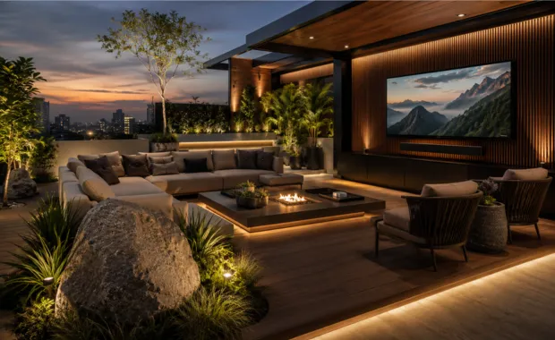
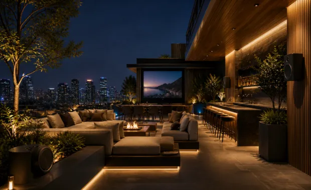
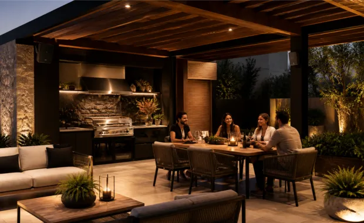
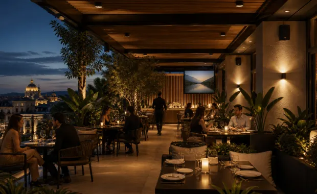

Audio y video para terrazas y jardines con cobertura uniforme y control por zonas.
Diseñamos e instalamos sistemas de audio y video para terrazas, jardines,
roof gardens, pérgolas, asadores y áreas de alberca. Integramos bocinas para exterior,
amplificación, control por zonas, pantallas o proyección según las medidas, exposición al clima,
ruido ambiental y forma de utilizar el espacio.
Atendemos proyectos residenciales en
Ciudad de México, Estado de México y otras ciudades de México.
Una terraza o jardín bien sonorizado permite escuchar con claridad en toda el área, sin concentrar el volumen en un solo punto.
Los exteriores se utilizan para reuniones familiares, comidas, asados, descanso, fiestas privadas, deportes, películas y música ambiental. Para que el sistema funcione correctamente, el diseño debe considerar las medidas del espacio, altura de montaje, distribución de las personas, obstáculos, ruido ambiental, exposición al clima, cobertura de las bocinas y condiciones de luz cuando también se integra video.
La cantidad de bocinas no se define únicamente por metros cuadrados. Buscamos distribuir el sonido de forma uniforme, evitar puntos demasiado fuertes o zonas sin cobertura, seleccionar equipos adecuados para exterior y definir el nivel de cada zona según su uso. Así obtenemos mayor claridad, una experiencia más uniforme y una operación sencilla.
Ambiente exterior
Sonido distribuido para convivencias, comida, descanso, deportes o entretenimiento sin depender de un solo punto de audio.
Operación sencilla
Control práctico del volumen y, cuando el sistema lo permite, selección de fuentes por zona.
Proyecto escalable
Puede planearse para crecer por zonas: terraza, jardín, asador, alberca, roof garden o pérgola.
Instalación cuidada
Ubicación de bocinas, rutas de cableado, soportes y conexiones pensadas desde el diseño del proyecto.
En exteriores, cobertura, ruido ambiental y exposición cambian la forma de diseñar el sistema.
Una terraza o jardín se comporta distinto a una sala interior: hay menos superficies que contengan el sonido, el ruido ambiental puede variar, existen zonas separadas y el equipo puede quedar expuesto a sol, humedad, polvo o cambios de temperatura.
Por eso revisamos cobertura horizontal y vertical, altura y orientación de montaje, separación entre bocinas, nivel de escucha esperado, ubicación de amplificación y rutas de cableado antes de definir el sistema.
Cobertura irregular
Concentrar todo el nivel en una sola bocina puede crear demasiado volumen cerca y poca cobertura a distancia.
Video poco visible
La luz ambiental, los reflejos, la orientación y el horario de uso influyen directamente en la visibilidad de pantallas y proyección.
Equipos expuestos
No todo equipo está diseñado para exterior. La protección debe corresponder a la ubicación y al grado de exposición declarado por el fabricante.
Sin zonas definidas
Terraza, jardín, asador o alberca pueden requerir niveles de volumen y controles independientes para funcionar mejor.
Diseñamos audio y video exterior a partir de cobertura, uso, exposición y control.
Analizamos dimensiones, altura, superficies, zonas de escucha, ruido ambiental, exposición al clima, distancias de cableado y posibilidad de crecimiento para definir bocinas, amplificación, video, control y forma de operación.
Audio exterior
Bocinas de muro, plafón o paisaje seleccionadas según cobertura, montaje, exposición y nivel de escucha requerido.
Video exterior
Pantallas o proyección seleccionadas según luz ambiental, reflejos, distancia de visualización, tamaño de imagen y horario de uso.
Control por zonas
Volumen independiente para terraza, jardín, alberca, comedor exterior o área social, según la arquitectura del sistema.
Diseño del espacio
Definimos ubicación, orientación y separación de bocinas para buscar cobertura uniforme sin invadir visualmente el espacio.
Una solución exterior completa: audio, video, cableado, control e integración.
El alcance se adapta a dimensiones, altura, tipo de techo o muro, exposición al clima, número de zonas, nivel de volumen, video exterior, operación diaria, infraestructura disponible y presupuesto.
Bocinas para exterior
Selección y ubicación de bocinas para terrazas, jardines, pérgolas y espacios semiabiertos según cobertura, soporte y exposición.
Audio distribuido exterior
Sonido por zonas para terraza, jardín, asador, alberca, roof garden o comedor exterior, con amplificación y control dimensionados para la carga instalada.
Música ambiental
Música ambiental con nivel uniforme para convivencias, cenas, reuniones familiares o áreas sociales exteriores.
Pantallas para terraza
Soluciones de video para deportes, películas y entretenimiento, considerando luz ambiental, reflejos, distancia de visualización y protección.
Proyección exterior
Alternativas de proyección para uso principalmente controlado o nocturno, definidas según tiro, tamaño de imagen, superficie y luz disponible.
Control e integración
Configuración de fuentes, volumen por zonas y operación diaria para que el sistema resulte práctico y fácil de usar.
Audio y video para terrazas, jardines, roof gardens y otras áreas exteriores.
Desde una terraza residencial hasta un jardín amplio o un roof garden, cada proyecto se adapta a la cobertura necesaria, la forma de uso, la arquitectura y la exposición real del lugar.

Terrazas residenciales
Roof gardens
Asadores y pérgolas Áreas de alberca
Áreas de alberca

Terrazas comercialesCómo trabajamos tu proyecto de audio y video
Un proceso claro para pasar de las necesidades del espacio a una solución dimensionada, instalada y configurada.
Nos contactas
Nos escribes por WhatsApp y nos cuentas qué espacio quieres cubrir, cómo lo utilizas y qué experiencia esperas.
Revisamos el área
Revisamos fotos o planos, medidas, altura, zonas, exposición, techo, muros, energía y rutas posibles de cableado.
Definimos solución
Definimos cobertura, cantidad de bocinas, amplificación, video, zonas, cableado, control y margen para crecimiento.
Propuesta clara
Te entregamos alcance, equipos, supuestos, tiempos e inversión del proyecto.
Instalamos
Realizamos montaje, cableado, conexiones, pruebas, ajustes y puesta en marcha conforme al alcance aprobado.
Te capacitamos
Te explicamos la operación básica, zonas, fuentes y controles incluidos en la solución.
No elegimos bocinas por intuición: el sistema se define a partir del espacio y de la carga real del proyecto.
Una terraza o jardín requiere revisar cobertura, altura de montaje, distancia, ruido ambiental, exposición, cableado, ubicación de amplificación y relación con áreas vecinas. Si se utiliza línea distribuida de 70/100 V, la carga total y la reserva del amplificador deben calcularse antes de aprobar el equipo.
En DG Audiosound buscamos que audio, video y control queden dimensionados para el uso declarado, con una instalación ordenada y capacidad de crecimiento definida cuando el proyecto lo requiera.
Una decisión profesional para tus exteriores
- Asesoría personalizada
- Propuesta formal
- Equipos originales
- Instalación profesional
- Integración estética
- Capacitación básica de uso
- Acompañamiento técnico
Marcas profesionales para soluciones de alto rendimiento
Seleccionamos tecnología de marcas profesionales según cobertura, potencia, compatibilidad, exposición, control y necesidades de cada proyecto.
Preguntas frecuentes sobre audio y video para terrazas y jardines
Respuestas directas sobre cobertura, bocinas para exterior, zonas, video y datos necesarios para diseñar el proyecto.
Para terrazas y jardines conviene utilizar bocinas y componentes adecuados al grado de exposición del espacio, distribuidos para lograr cobertura uniforme. La solución depende de las medidas, altura de montaje, zonas de escucha, ruido ambiental, nivel de volumen esperado y exposición al sol, humedad o lluvia.
No se define únicamente por metros cuadrados. La cantidad depende del patrón de cobertura de las bocinas, altura y ubicación de montaje, separación entre puntos, obstáculos, ruido ambiental, uniformidad deseada y nivel de presión sonora esperado.
Sí. Existen bocinas diseñadas para exterior y zonas semiabiertas. La selección debe considerar el grado de protección indicado por el fabricante, ubicación, exposición al sol, humedad o lluvia, temperatura, potencia requerida y estética.
Sí. Un sistema de audio distribuido puede dividir terraza, jardín, asador, alberca o roof garden en zonas con volumen independiente y, según la arquitectura elegida, diferentes fuentes de audio.
Sí. La solución de video se define según iluminación ambiental, reflejos, distancia de visualización, tamaño de imagen, protección del equipo, conectividad y horario de uso. En exteriores, la visibilidad depende especialmente de la luz disponible.
Son útiles las medidas, altura de montaje, fotos o planos, tipo de techo y muros, exposición al clima, zonas a cubrir, uso principal, nivel de volumen esperado, ruido ambiental aproximado, necesidad de video, equipos existentes, distancias de cableado y posibilidad de crecimiento.
Diseñemos el audio y video de tu terraza o jardín
Comparte fotos o planos, medidas, altura, tipo de exterior, zonas, exposición, uso y nivel de volumen esperado para preparar una recomendación técnica inicial.
Audio y video exterior diseñado para tu espacio
Cuéntanos cómo es tu terraza o jardín y qué quieres lograr. Con medidas, fotos o planos y datos de uso podemos orientar mejor la cobertura, zonas y tecnología necesaria.
Solicita una cotización
Indica si tu espacio es terraza, jardín, roof garden, pérgola, asador o área de alberca, y si necesitas audio, video o control por zonas.